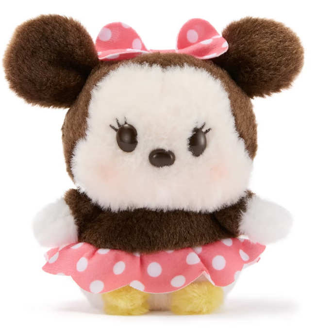
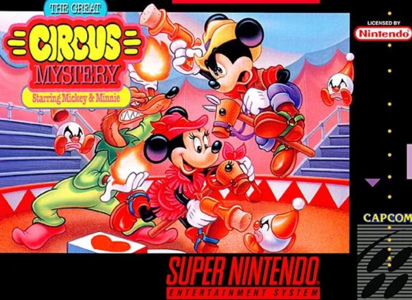

Mis colecciones de Minnie

Cada peluche, figura, prenda o complemendto e Minnie representa la dulzura y el estilo inconfundible de Disney. Son piezas especiales que forman parte de colecciones oficiales que pueden encontrarse en tiendas y parques temáticos. La idea es mostrar cómo cualquiera puede empezar su propia colección y crear su mundo Minnie 🎀.
Ver ProyectoMis cortometrajes

Este proyecto está inspirado en los cortometrajes clásicos de Minnie Mouse, donde comparte aventuras con Mickey y sus amigos. A lo largo de los años, Minnie ha protagonizado historias llenas de humor, música y encanto que pueden disfrutarse en plataformas digitales y colecciones especiales ❤️.
Ver ProyectoMis videojuegos

Minnie también ha formado parte de videojuegos mágicos junto a Mickey y sus amigos, donde se pueden vivir aventuras, resolver desafíos y explorar mundos llenos de color 🎮✨.
Estos juegos permiten disfrutar del universo Disney de forma interactiva y divertida para todas las edades.
Ver Proyecto